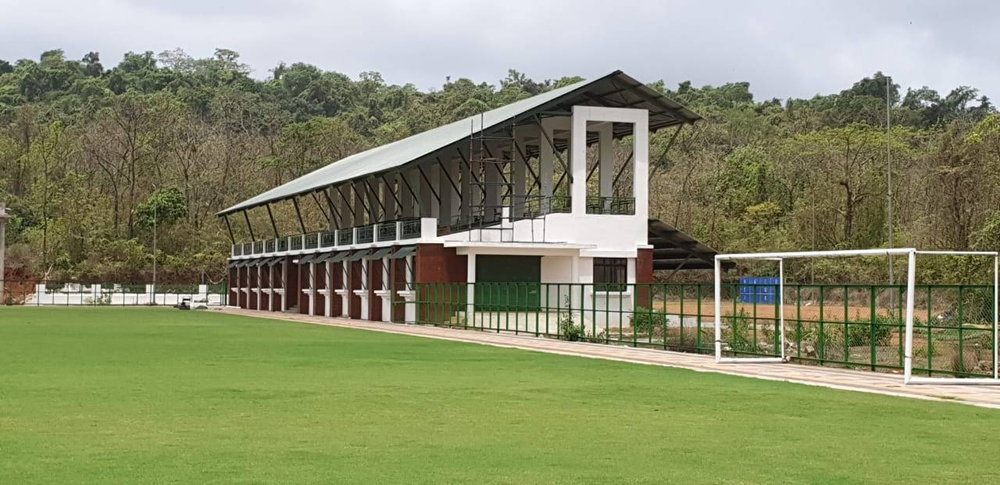
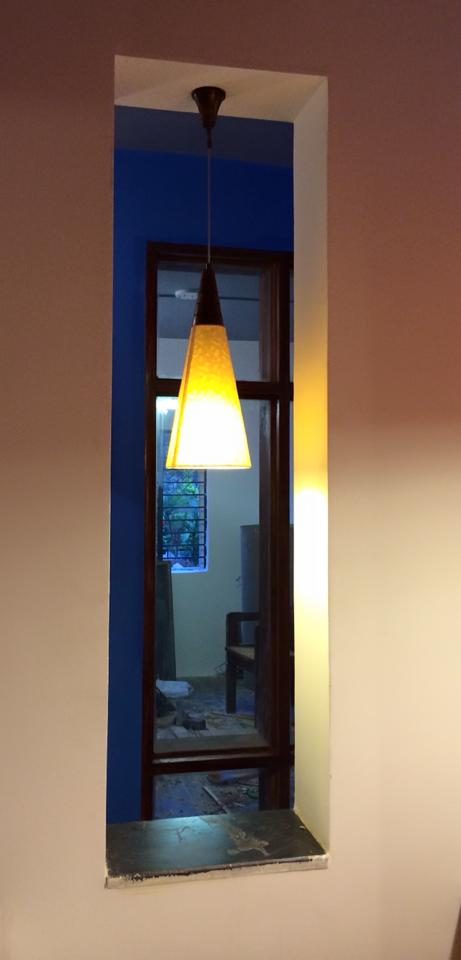
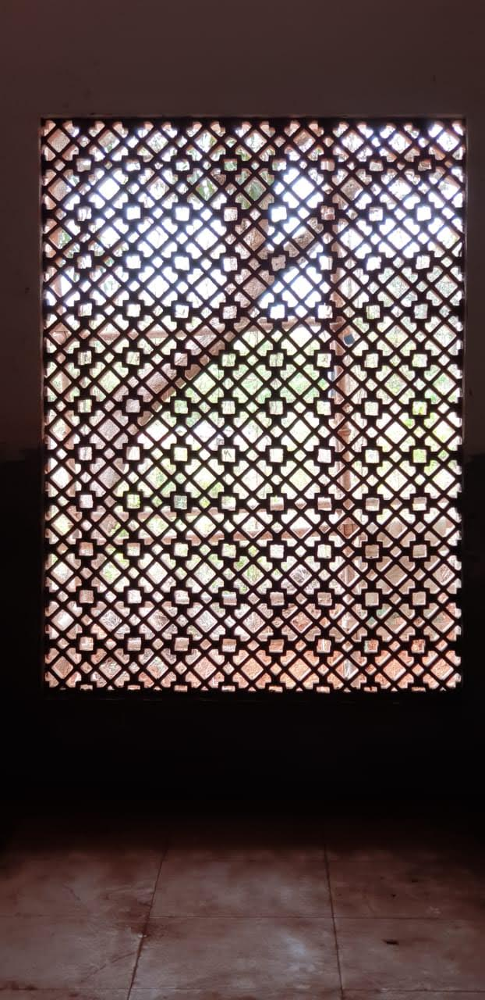

Dempo Football Academy

This prestigious football academy was established under the vision of Mr. Srinivas Dempo, the esteemed owner of Goa's ISL football team. The comprehensive facility integrates multiple components including an educational institution, a specialized football academy with advanced training facilities, a regulation FIFA-size football field complemented by a spectator viewing pavilion, and numerous other purpose-built amenities designed to nurture both athletic and academic excellence.
The project stands as a testament to innovative cost-effective construction practices, achieved through the strategic utilization of locally sourced materials - a decision particularly crucial given Goa's characteristically extended procurement timelines. The architectural design prominently features laterite stone, a material deeply rooted in Goan architectural heritage, which not only provided practical advantages in construction but also seamlessly integrated the facility into the region's distinctive architectural vocabulary, creating a harmonious blend of functionality and cultural identity.


